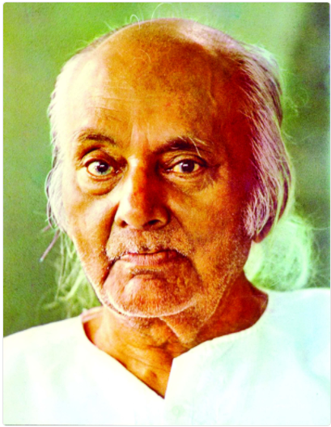

Rebel poet
Kazi Nazrul Islam is the nation poet of Bangladesh who is
especially recognized as a Bidrohi kobi (Rebel Poet) around the
country. Nazrul is a famous poet, musician and philosopher of
Bangladesh. The famous poet Nazrul's writings deal with the
revolution of that period of the British Government. His
revelutionary attempt helped him to be a national poet of
Bangladesh. He has raised his voice against any kind of fascism and
oppression and got popularity swifty around the Indian
Subcontinent
Awsome Writer
Nazrul's writings explored themes such as love, freedom, humanity,
and revolution. He opposed all forms of bigotry and
fundamentalism, including religious, caste-based and gender-based.
Throughout his career, Nazrul wrote short stories, novels, and
essays but is best known for his songs and poems. He pioneered new
music forms such as Bengali ghazals. Nazrul wrote and compossed
music for neerly 4000 songs (many recorded on HMV and
gramaphone records) collectively known as Nazrul Geeti
